Release Name: SPARROW v4.4 (Eclipse Plugin 2.2)
Release Date: 2012/03/23
Features
● 체커 개선
- 신규 C/C++ 체커 30개 추가 변경
- 신규 Java 체커 1개 추가
● 리포트 개선
- Function folding 지원
- 네비게이터와 리포트 표현 동기화
- 오류 설명박스 on/off
- New Window 지원
- Java 리포트 오류 표현 아이콘 개선
● 필터 개선
- 체커 문자열 검색 추가
- 알파벳 정렬 추가
- 필터 순서 변경
- 필터 상태 표시
- Hide 기능 변경
● 분석 방법 개선
- compiler type, compiler version 필수 옵션 선택옵션으로 변경
- PRESET 옵션 추가
- 분석 제외 리스트 설정
- Scaffold --> Extended Library로 변경 및 네스트에서 관리
- 분석 깊이 옵션 추가
- 중복 오류 제거
- 디버그 설정
● 프로젝트/스캔 일괄 편집,엑셀 기능
- 일괄 엑셀 내보내기
- 일괄 수정
- 일괄 삭제
- 체커그룹, 확장 라이브러리 바로 편집 기능
● 프로젝트 인포메이션 개선
- 프로젝트 정보 표시
- 제거된 오류 표시
- 데이터 항목 링크 표시
● 프로젝트 복제 기능
- 프로젝트 생성시 복제
- 프로젝트 복사
● 자동 업데이트 지원
- 클라이언트 자동 업데이트
- 이클립스 플러그인 원격 설치 및 업데이트
● 한국어 추가 지원
- NEST 한글지원
- 클라이언트 도움말 한글 지원
● NEST의 모든 분석 결과 링크 지원
- Project 페이지 링크 지원
- Scan 페이지 링크 지원
- Project Information 페이지 링크 지원
- Analyzed File Information 페이지 링크 지원
● 패키지 개선
- Properties 자동 설정
- 윈도우 인스톨러
- AIX ,HPUX ,Solaris Ctags 자동 설치
● 체커그룹 개선
- Complex 표시
- 디폴트값 변경
- 체커 검색 기능
● 서버매니저 개선
- 포트설정
- 자동시작 옵션
● 신규 개발 환경 지원
- C/C++ 신규 개발 환경 지원(Code warrior, PM+)
- JAVA 신규 개발 환경 지원(maven)
- 후킹 유틸 지원
● 사용편의성 강화
- Defect List Graph에 링크 추가
- Public 프로젝트 추가
- 프로젝트 페이지 컬럼 순서 변경
- 스캔 페이지 컬럼 순서 변경
- 스캔 페이지 분석 결과 순서번호로 표시
- 체커그룹 정보 표시
- 메뉴개선
- 분석 Summary에 체커 알파벳순 정렬
- 분석 Summary에 업로드 실패 결과 표시
- 클라이언트 매니저에 html 도움말 추가
- Java 메모장 추가
● 기타 개선
- 윈도우 64비트 후킹 지원 문제 해결
# Eclipse Plugin
● 결함 상태 세분화
- 결함상태 변경 세분화
- 결함상태 일괄 변경 기능
- 상태변경 자동 저장 반영
● 분석 정보 표시
- 분석정보 표시 기능
- 체커 그룹 표시
● 원격 설치 및 업데이트 지원
● 사용편리성 강화
- 체커그룹 NEST 100% 동기화
- 체커설명 추가
- 라이선스 확인 개선
- NEST 연동 메뉴 세분화
● 성능 개선
- 분석 속도 개선
- 불필요한 파일 삭제
체커 개선
- 신규 C/C++ 체커 30개 추가 변경
C/C++ 체커에 관해서 총 30개의 체커가 추가 변경되었습니다. 이중 5개(OVERRUN.MEMSET/UNREACABLE_CODE/CAST_ALTER_VALUE/OVERRUN_PF/IGNORED_RETURN_VALUE)는 기존 체커의 성능을 개선한 것입니다. 아래는 현재 지원하고 있는 C/C++체커 목록 중 신규 추가 변경된 목록입니다.
*신규체커 목록
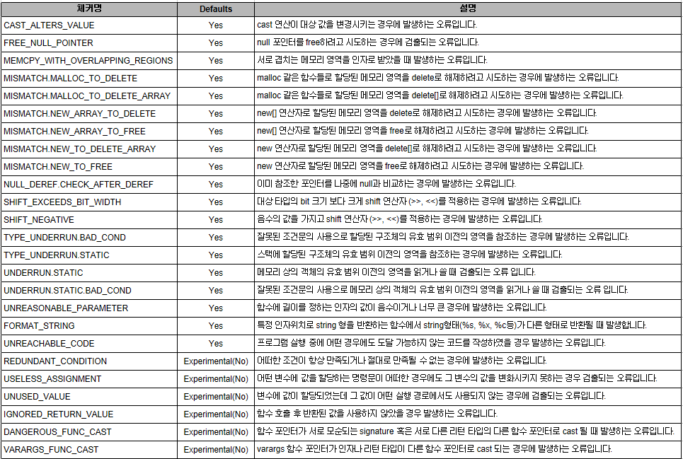
*성능 강화 체커 목록
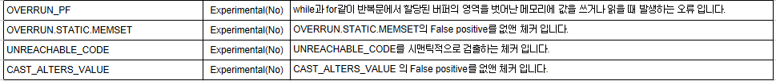
- 신규 Java 체커 1개 추가
Java 체커에 관해서 1개의 체커가 추가되었습니다.
Checker |
Description |
NULL_RETURN_USR |
- 사용자가 작성한 library들 중에 null을 돌려줄 가능성이 있는 method들로부터 값을 특정 변수에 할당한 뒤, 이변수의 null을 확인하지 않고 이변수를 바로 역참조 하는 경우 |
리포트 개선
- Function folding 지원
함수, 조건문의 열고 닫을 수 있는 기능을 새롭게 지원합니다.
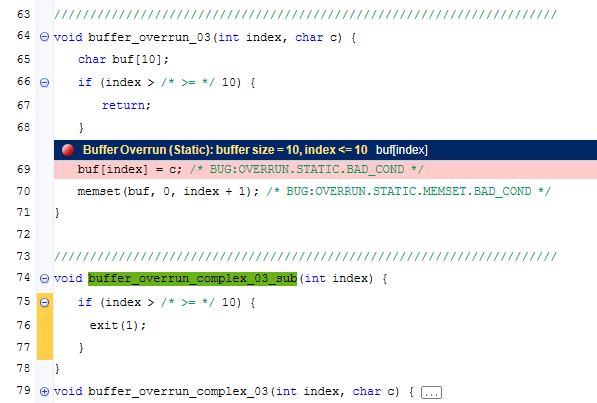
- 네비게이터와 리포트 표현 동기화
네비게이터의 Branch, Call 체크에 따라 리포트에도 해당 부분이 동일하게 나타납니다. 기본값은 Disable입니다.
- 오류 설명박스 on/off
리포트의 Defect sign을 통해 남색 오류 설명 박스를 제어 할 수 있습니다.
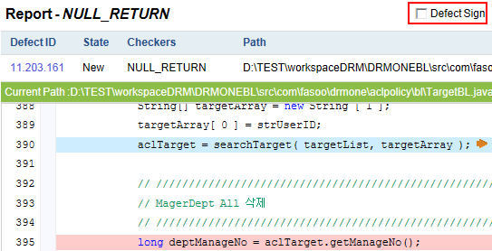
- New Window 지원
리포트 소스코드내에서 클릭하는 , 함수, 변수등에 관하여 새로운 창으로 보일수 실행되는 기능을 추가하였습니다.
New window 설정은 Defect list 위쪽에 위치해 있습니다.
- Java 리포트 오류 표현 아이콘 개선
* Branch아이콘이 기존 에서 로 변경되었습니다.
* Call아이콘이 기존에서 로 변경되었습니다.
* Null을 참조하는곳과 할당하는곳 둘다 으로 변경되었습니다.
필터 개선
- 체커 문자열 검색 추가
문자열을 입력하면 포함된 체커가 검색됩니다.
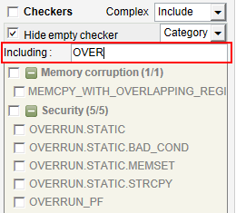
- 알파벳 정렬 추가
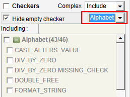
- 필터 순서 변경
사용성이 많은 체커와 경로 검색을 위로 이동하였습니다.
- 필터 상태 표시
필터가 하나라도 적용되면 상태가 Filter Detail에 ON 으로 변경 됩니다.
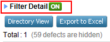
- Hide 기능 변경
필터에 의해 defect list에 나타나지 않는 것은 무조건 Total 옆에 표시되게 변경하였습니다.
분석 방법 개선
- compiler type, compiler version 필수 옵션 선택옵션으로 변경
CT, CV를 입력하지 않아도 자동으로 컴파일러명(CN)을 보고 인식합니다.
CV의 경우 입력하지 않으면 gnu는 4.1.2 msvc는 ms2008이 들어갑니다.
- PRESET 옵션 추가
컴파일러명, 컴파일러 타입, 컴파일러 버전 즉 CN,CT,CV를 미리 지정하여 하나의 프리셋으로 분석 가능합니다.
현재는 비쥬얼스튜디오 모든 버전, codewarrior등의 IDE가 추가되어 있습니다.
사용법은 --PRESET [preset명] 또는 클라이언트매니저에서는 마법사에서 PRESET 을 선택 할 수 있습니다.
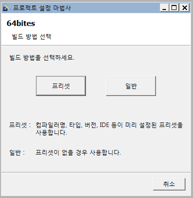
- 파싱리스트 추가
파싱리시트를 통해 설정된 옵션으로 파싱을 합니다.
- 분석 제외 리스트 설정
분석시 원하지 않는 파일 이나 폴더 리스트를 지정할 수 있습니다.
excluded_list.txt 에 원하지 않는 리스트를 입력하고, -OD를 통해 분석하면 됩니다. 이떄 입력한 리스트는 분석은 하나 업로드만 하지 않습니다.
클라이언트 매니저에선 GUI를 지원합니다.
- Scaffold --> Extended Library로 변경 및 네스트에서 관리
Extended Library를 네스트를 통해 만들며 프로젝트 생성시 추가합니다.
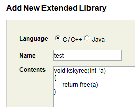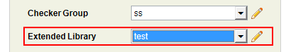
- 분석 깊이 옵션 추가
분석 깊이 설정하는 옵션을 쉽게 바꿀수 있도록 변경 하였습니다.
클라이언트 매니저는 추가설정->기타에 있습니다.
이클립스는 설정 -> 분석 추가옵션에 있습니다.
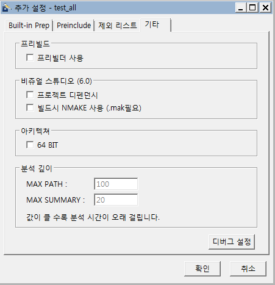
- 중복 오류 제거
체커명, 함수명, 오류라인이 같은 것은 여러개가 나오면 하나만 리포트 되도록 변경되었습니다.
- 디버그 설정
추가설정 -> 기타 -> 디버그 설정 버튼을 제공합니다. 클릭할 경우 아래와 같은 디버그 옵션이 생성 됩니다.
* noedg(신규 추가)
기존에 edg 를 거친 전처리파일(gen_files) 가 있을 경우 -E analysis 모드 사용시 --noedg를 추가하면 edg를 건너뛰고 분석만 실행합니다.
하지만 FORMAT_STRING과 edg의 UNREACHABLE 은 검출 되지 않습니다.
* DC(신규 추가)
선택한 Compiler Type 으로만 파싱하게 됩니다.
* Sed / Macro
기존에 기타에 있었던 파싱 관련 기능을 이동하였습니다.
- 기타 개선
* 64비트 옵션 추가
64비트 에서 컴파일된 소스 long, int사이즈를 해결한 --64BIT 옵션을 추가로 지원합니다. AIX,HPUX,SUN은 기본값이 64비트 이며, 처음 설치시 64비트로 설정하면
자동으로 64비트 옵션이 실행됩니다.
* msvc CV이름 변경
기존 8.0, 9.0 등에서 ms2008, ms2010 으로 변경 되었습니다.
* plover, finch option 파일 추가
Ploveropt.txt / finchopt.txt 파일을 -OD 에 추가하여 이용 할 수 있습니다.
* 중복체커에 대한 우선순위 정하는 기능 추가
중복체커에 관하여 엔진 우선순위를 지정하는 기능이 추가되었습니다.
프로젝트/스캔 일괄 편집,엑셀 기능
- 일괄 엑셀 내보내기
프로젝트 페이지에서 원하는 프로젝트를 선택/전체선택 후 Export to Excel 버튼을 클릭하면 최근에 분석한 결과가 내보내기 됩니다.
스캔 페이지에서 원하는 스캔 선택/전체선택 후 Export to Excel 버튼을 클릭하면 선택한 분석 결과가 내보내기 됩니다.
데이터가 많은 경우 파일이 분할되어 여러개의 파일이 생성됩니다.
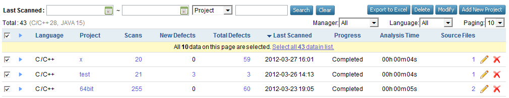
- 일괄 수정
프로젝트 페이지에서 원하는 프로젝트를 선택/전체선택 후 Modify를 클릭하면 아래의 화면에서 원하는것을 체크하고 변경하면 됩니다.
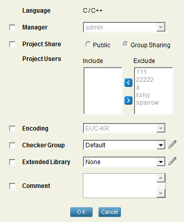
- 일괄 삭제
프로젝트 페이지에서 원하는 프로젝트를 선택/전체선택 후 Delelte 버튼을 클릭하면 선택한 프로젝트가 삭제됩니다.
스캔 페이지에서 원하는 스캔 선택/전체선택 후 Delelte 버튼을 클릭하면 선택한 분석 결과가 삭제됩니다.
- 체커그룹, 확장 라이브러리 바로 편집 기능
프로젝트 페이지에서 체커그룹과 ,확장 라이브러리 옆에 있는 아이콘을 클릭하여 바로 해당 내용 편집이 가능합니다.
프로젝트 인포메이션 개선
- 프로젝트 정보 표시
프로젝트 페이지에서 프로젝트 이름을 클릭하면 인포메이션 페이지로 이동합니다.
- 제거된 오류 표시
기존과 비교하여 제거된 오류개수가 표시됩니다.(Eliminated Defects)
- 데이터 항목 링크 표시
Scans, Existing, Recurred, Source Defects, All Files 에 링크가 표시되어 클릭하면 필터된대로 이동합니다.
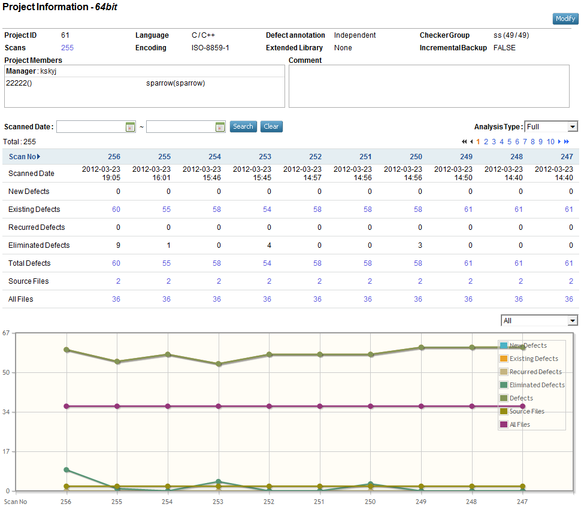
프로젝트 복제 기능
- 프로젝트 생성시 복제
프로젝트 생성시 정보를 입력하고 Create and continue 버튼을 통하여 입력한 정보로 동일한 프로젝트를 만들 수 있습니다.
- 프로젝트 복사
이미있는 프로젝트 수정 메뉴에서 Copy를 통하여 설정된 메뉴로 동일한 프로젝트를 만들 수 있습니다.
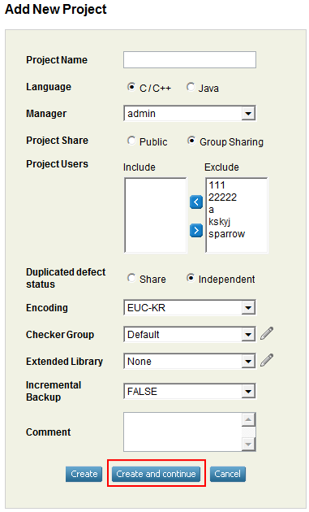 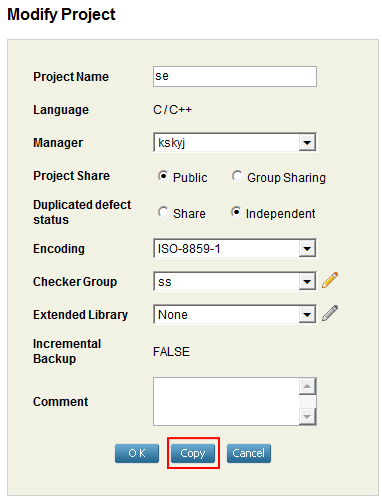
자동 업데이트 지원
- 클라이언트 자동 업데이트
서버(NEST)쪽이 업데이트 되면 분석시 -S 옵션을 이용하면 클라이언트가 자동으로 업데이트가 됩니다.
한국어 추가 지원
- NEST 한글지원
NEST 사용자 계정에서 선호하는 언어를 선택 합니다.
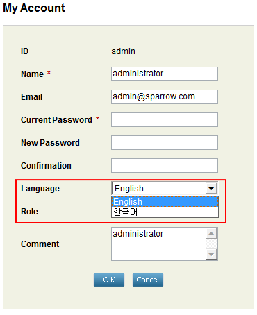
- 클라이언트 도움말 한글 지원
sparrow-whistle.sh --help 사용시 도움말이 한글도 지원됩니다. setup / configure 시 설정을 ko 로 설정하면 자동으로 지원됩니다.
NEST의 모든 분석 결과 링크 지원
NEST에 표시되는 모든 결과에 대해 Defect List로 이동하며 쉬프트로 새창열기도 지원합니다.
- Project 페이지 링크 지원
NewDefects, TotalDefects, SourceFiles 링크 지원
- Scan 페이지 링크 지원
NewDefects, TotalDefects, SourceFiles 링크 지원
- Project Information 페이지 링크 지원
NewDefects, ExistingDefects, RecurredDefects, TotalDefects, SourceFiles, Allfiles 링크 지원
- Analyzed File Information 페이지 링크 지원
해당파일의 Defects링크 지원
패키지 개선
- Properties 자동 설정
Setup / Configuration 을 하면 자동으로 프로퍼티를 생성합니다.
- 윈도우 인스톨러
윈도우의 경우 전용 인스톨러를 이용하여 설치/제거가 가능합니다.
- AIX ,HPUX ,Solaris Ctags 자동 설치
Setup을 실행하면 자동으로 Ctags 소스를 컴파일하고 설치합니다.
체커그룹 개선
- Complex 표시
Complex가 포함된 체커를 위해 컬럼을 추가하였습니다.
- 디폴트값 변경
C/C++ : 36개 Enabled
13개 Disabled - 실험적 체커와 중요하지 않은 체커
Java : 55개 Enabled - Level 1,2
239개 - PMD와 SPARROW 중복된것, Level 3,4,5
- 체커 검색 기능
체커가 포함된 알파벳을 입력하여 검색이 가능합니다.
숨겨진 옵션으로 #엔진명 을 적으면 해당 엔진으로 검색이 가능합니다.
엔진 목록은 다음과 같습니다. #Opus1 / #Opus2 / #Plover / #EDG1 / #EDG2 / #Finch / #Comment / #PMD
서버매니저 개선
- 포트설정
사용하는 포트를 수정이 가능하도록 포트설정을 추가하였습니다.
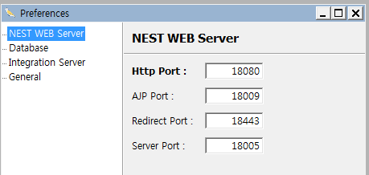
- 자동시작 옵션
프로그램 시작시 자동으로 재시작하는 옵션이 추가되었습니다.
신규 개발 환경 지원
- C/C++ 신규 개발 환경 지원
코드워리워(Code warrior): Preset에서 codewarrior 를 지정하여 분석 합니다.
ADS 1.2 버전인 경우는 아래와 같이 매니저에서 도구 -> 환경설정 -> Code Warrior에 IDE 경로를 추가해야 합니다.
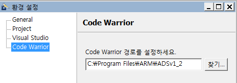
PM+ IDE : Preset에서 pmplus를 지정하여 분석 합니다.
사용시 디바이스파일을 지정해주어야 합니다.
- JAVA 신규 개발 환경 지원
Maven: sparrow-java.sh -BT maven 또는 매니저에서 빌드타입을 maven을 선택합니다.
- 후킹 유틸 지원
후킹이 지원되지 않는 빌드시스템을 위해 유틸을 제공합니다. 컴파일되는 과정이 작성된 파일에서
입력한 컴파일러가 들어간 구문에 전처리 옵션을 추가하는 스크립트를 생성합니다.
사용하기 위해서는 빌드시 컴파일되는 과정이 화면에 출력되어야 합니다.
예제) cc -c a.c
사용법 (gcc,g++ 로 컴파일하고 make 로 빌드할경우)
1. make > test.txt
2. util/sparrow-hook.sh test.txt gcc,g++
3. 생성된 sparrow-build.sh 실행하면 전처리 파일이 생성됨
4. prebuilder 를 이용하여 extract
5. anlaysis로 분석 실행
사용편의성 강화
- Defect List Graph에 링크 추가
Defect List Graph 메뉴에 해당 체커를 클릭하면 필터된 Defect List로 이동합니다.
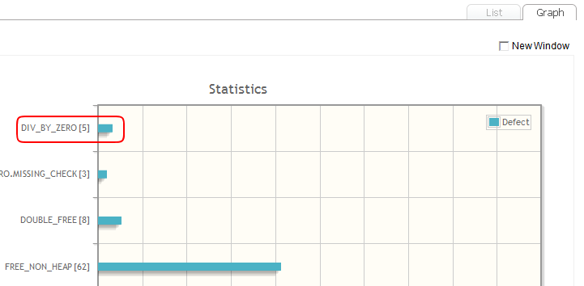
- Public 프로젝트 추가
사용자에 상관없이 분석/리뷰가 가능한 Public프로젝트를 프로젝트 생성/수정시 설정할 수 있습니다.
- 프로젝트 페이지 컬럼 순서 변경
Language Project Scans New Defects Total Defects Last Scanned Progress Analysis Time Source Files
- 스캔 페이지 컬럼 순서 변경
No New Defects Total Defects Analysis Type Scanned Date Progress Analysis Time Source Files Build LOC
- 스캔 페이지 분석 결과 순서번호로 표시
기존 스캔아이디에서 분석 순서대로 표시하게 변경되었습니다.
- 체커그룹 정보 표시
NEST, 이클립스, 분석 Summary에서 선택한체커/전체체커 를 표시합니다.
- 메뉴개선
Home 이 Projects로 변경 되었으며, ExtendedLibrary가 추가되었습니다.

- 분석 Summary에 체커 알파벳순 정렬
분석후 결과가 나오는 Summary에 체커 알파벳순으로 정렬하였습니다.
- 분석 Summary에 업로드 실패 결과 표시
분석후 결과가 나오는 Summary에 Upload failed defects를 표시합니다.
- 클라이언트 매니저에 html 도움말 추가
- Java 메모장 추가
DRM환경에서 옵션파일 저장시 에러가 생길경우를 대비하여 메모장 유틸을 추가하였습니다.
사용법은 util/editor/editor.bat 을 실행하십시오.
기타 개선
- 윈도우 64비트 후킹 지원 문제 해결
윈도우 64비트에서 후킹모듈 레지스트리 지정경로가 잘못되었던것을 수정하였습니다. 윈도우 인스톨러를 통해 이용하거나,
설치 후 직접 레지스트리를 등록해야합니다.
# Eclipse Plugin
결함 상태 세분화
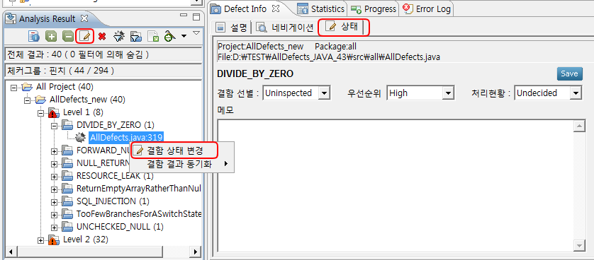
- 결함상태 변경 세분화
기존 결함 선별만 표시 할 수 있었으나, NEST와 마찬가지로 우선순위, 처리현황 메모를 변경 할 수 있습니다.
- 결함상태 일괄 변경 기능
Analysis Result 에서 원하는 범위를 선택후 마우스 우클릭 또는 결함상태 변경 아이콘을 통하여 상태를 일괄 변경 할 수 있습니다.
- 상태변경 자동 저장 반영
메모를 제외한 결함 선별, 우선순위, 처리현황은 변경시 자동으로 저장 반영 됩니다.
분석 정보 표시
- 분석정보 표시 기능
가장 최근에 분석한 정보를 보여줍니다.
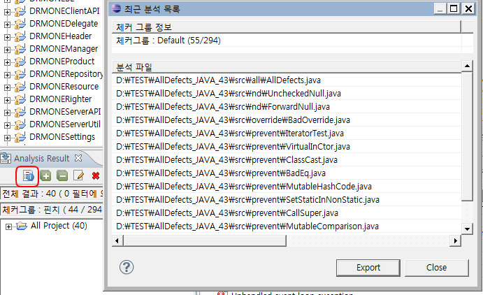
- 체커 그룹 표시
어떤 체커 그룹을 통해 분석하였는지 표시해 줍니다.
원격 설치 및 업데이트
- 원격 설치 및 업데이트
서버(NEST)쪽에 플러그인 파일이 포함되어 있어 이클립스의 Install, Update메뉴을 이용 할 수 있습니다.
사용법은 오픈소스툴과 마찬가지로 URL를 입력후 사용하면 됩니다.
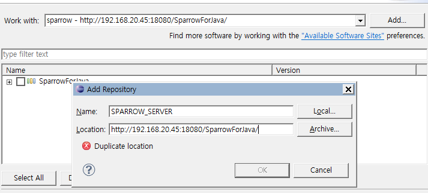
사용편리성 강화
- 체커그룹 NEST 100% 동기화
기존 NEST 연동시 주석/PMD 만 사용했던것에서 모든 자바 체커 그룹을 NEST에서 설정한 대로 분석합니다.
NEST 연동을 하면 체커그룹을 사용 할 수 있으며, 로그인을 하지 않을 경우 이클립스 체커 설정으로 분석 합니다.
단, NEST 업로드 분서시에는 해당 프로젝트의 체커그룹으로 분석 됩니다.
- 체커설명 추가
체커를 선택하면 체커 설명과 CWE,CERT,OWASP 링크와 예제를 제공합니다.
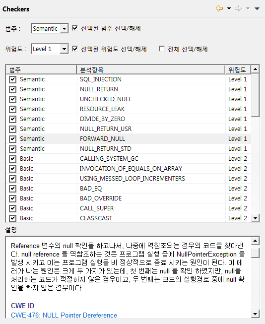
- 라이선스 확인 개선
라이선스를 확인 을 좀더 알아보기 쉽게 개선하였으며, 유효하지 않은 라이선스일 경우 발생한 팝업 버그를 수정하였습니다.
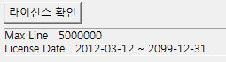
- NEST 연동 메뉴 세분화
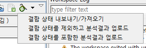
- 분석 깊이 옵션 추가
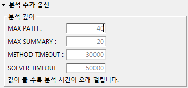
성능 개선
- 분석 속도 개선
NEST에 업로드(NEST로 분석, Analysis result NEST업로드)를 하지 않을 경우 소스코드를 복사하지 않아 분석속도가 개선되었습니다.
- 불필요한 파일 삭제
분석 결과를 삭제할 경우 metadata 안의 필요없는 파일들도 삭제합니다.
Created with the Personal Edition of HelpNDoc: Free HTML Help documentation generator